Getting Started
KETSU is an app that allows developers to adapt websites to app format.
KETSU by itself is an empty app, it can´t do anything. You have to feed it a module to make it do something. This modules contain the instructions for KETSU to do things. This instructions can be, go to x website get the data and display it for example.
Here you are going to understand how modules work, how to make modules for KETSU, how to debug errors, how to set up the enviorment to develop modules etc. So lets get started!
Knowledge
In order to be able to create modules you need basic knowledge on few ambits.
Javascript: Its important to know how code in js (Intermediate), Understand objects and know interact with the DOM.
Scrapping (Optional): If you have previous experience with web scrapping things will be more easy for you.
JSON: you will need to know json notation and how to interact with it.
Networking: You need to know and understand basic networking.
Modules
Modules are basically a json object, this json object contains the instructions for the app to work
You can see an example of module over here
To visualize it better, we are going to display the json in tree format. So you can see things more clear.
Modules Structure
Modules have 6 major parts the moduleInfo, mainPage, search, info, chapters and moduleResolvers.
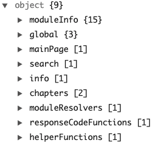Module Info: Contains info about the module and some basic configuration. such as the version, name etc.
The other ones that i mentionted above are the one ones in charge of making the mainpage, search, info etc get data from websites and display it. They are the most important objects because they contain the instructions for KETSU to do stuff.
The last ones that i didn´t mentioned above and you can see on the image are used for more advanced stuff, this will be covered after you understand the basics.
The basics
Alright lets start with the basics. We are going to start with filling the module Info
To start making your module you will need the template. You can download it clicking here
On the json go to the module info and fill the variables with the info about your module
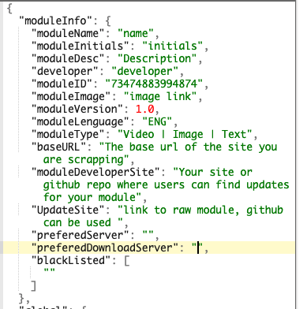Everything is very straight fordward, on moduleType set it to Video,Image, or Text depending on the output you want for your module.
Main Page
Let´s start with the actual thing, im just going to explain the mainpage part, because every part uses the same logic so if you are able to make the mainpage do something, you will be able to do it for the rest of the sections.
The mainpage object is the one in charge of displaying data on the Main page, were you expecting that? i know right. Anyways lets take a look at the MainPage object.

As you can see the mainpage is an array of mainpage objects. Each one represents a request to a site, it´s an array because its not limited to one request. At the moment we are not going to chain request to simplify everything.
The most important stuff here is the request, if you want to scrape data from google news for example, you set the url to google news and KETSU will do a request to that url.
The other important part is the javascript, the javascript is basically the logic, it is what is going to take the data from the site and fix it so KETSU can read it.
The objective of the javascript is going to be to recreate this same mainpage JSON object but with the output filled with the data you want kETSU to display.
On the module template you can find javascript templates for each section, let´s take a look at the mainpage section.
Main Page Javascript
At the top you will find some objects with static values that you can use on the javascript. I will explain you the use of them later.
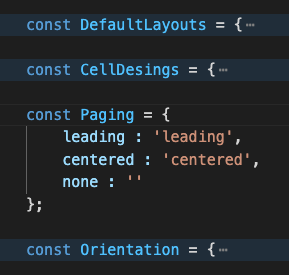After the static variables you will see the function classes, this functions allow you to create obejcts, you will use this objects to recreate the mainpage json object mentioned above, but through javascript.
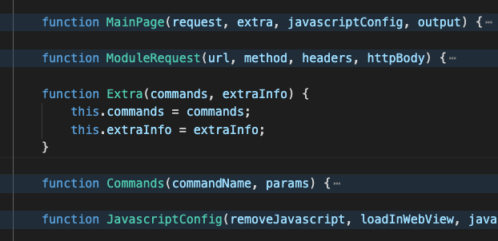Then you will find some usefull functions that will speed up your development, they are there to make your life easier, depending on the section you are coding (mainpage,search etc) they will vary.
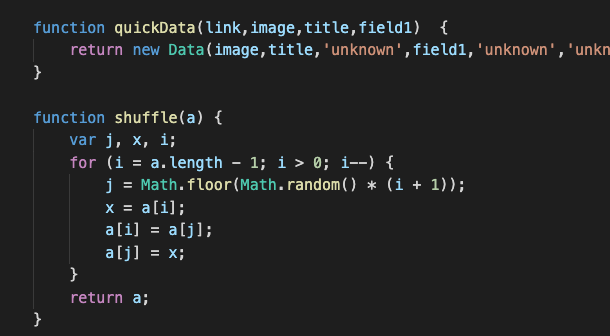And lastly the part where you have to code with some instructions, in most of the cases every object is made already and you just have to fill the outpu array with output objects, you have the instructions for each part inside the javscript itself.
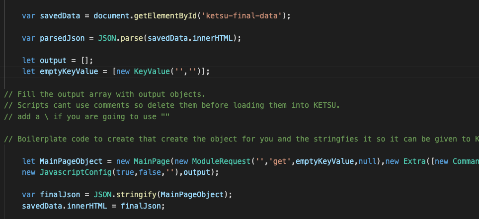As you can see after the mainpage object is done it is converted to a JSON string, and saved on an element on the html with an id called ketsu-final-data, it is generated by KETSU so you dont have to create it. After you save the object on the ketsu-final-div element KETSU will take it and read it to display the data.
Now im going to talk about the working flow of KETSU so you understand what i just explained better.
KETSU Flow
Here im going to explain what is KETSU doing with the request and the javascript, its important for you to understand this, this is basically the foundtation of what is going with the javascript the request and basically the whole thing.
Flow
As i said im going to explain it only for the mainpage section but every section works the same.
Everything starts with the first object of the section in this case is this one.
Now what KETSU is going to do when it loads the mainpage? it will do a request to the url in this case is google.com and it will retrieve the html.
Two things are going to be changed from the original html.
The first one, on the top of the html body of the request, KESTU will add a div with an id called 'ketsu-final-data', inside this div KETSU will put the mainpage object of the json the one we mentioned above. it will look like somethign like this
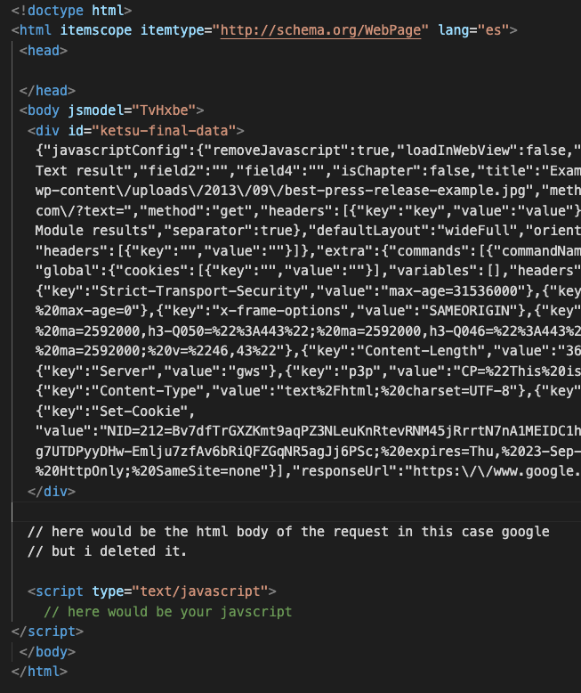And on the bottom, as you can see there is a script element, this script is also generated by KETSU and it will be filled with the script you set on the script variable of the mainpage json object
The javascript will be executed, and as i said before it has to take the data from the html and generate the same JSON object as the mainpage one but with the output array filled with data. Data that will be displayed later on KETSU.

Now if on this new object that you created throught the javascript you leave the request variable empty, KETSU will stop making request and it will take the output from the object to display it in the mainpage.
If you needed to make another request, you would have to set the new url on the object you just created through the javascript. Then KESTU will execute that request but one thing will be different from the first request. Lest say our javascript generated object looks like this.

This means that now KETSU instead of stopping here and displaying the data on the app, will do a second request to youtube. This second request as the first one will have the ketsu-final-data div appended at the top and the javascript that will be executed at the bottom.
It will look something like this:
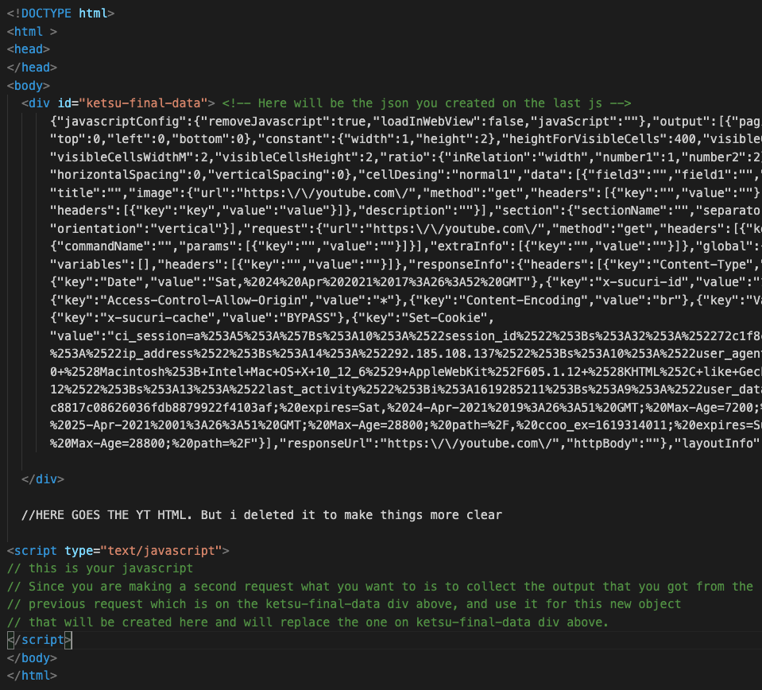Now where do you set the second javascript, well this is very simple. On the json module where you setted the first javascript on the first object of the mainpage array is your first javascript. So what you have to do is to copy the first mainpage object from the array and paste it on the array after the first one, on that second object you will change the javascript to your new javascript. You will have something like this:
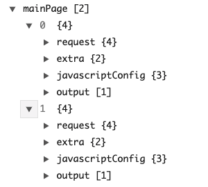And you can keep doing this cycle indefinetely its not limited to 2 or 3 request. It will stop doing request if on the new object you create the url variable is empty or the next request is the same as the previous one (This is to avoid infinite loops).
Last question, what happens if theres a a url setted but there is only one javascript? in this case KETSU will reuse the last javascript used on the previous request.
Creating a module
In order to create a module you are going to need few things.
- The modules template, download it here.
- A code editor in this case im going to use VSCode.
- And any navigator to debug your code.
Im going to code the mainpage only, as i said the logic is the same for every part so if you understand the mainpage you will be able to apply the knoledge to all of the parts.
My idea is to make a module that gets the most seen anime of the week and displays it on the mainpage & below it im going to show the anime schedule of today.
To make this happen im going to need to make use of the multiple request that i mentioned above, so this should cover everything here. In order to make it we need websites that get us the information we need, in this case im going to use livechart website for the schedule and anilist to get the most seen anime of the week. The result will be something like this.

Set Up
First we need to set everything up, im going to download and open open the module template on VSCode. It should look something like this.
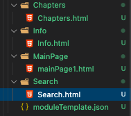Each folder contains a .html with the template javascript for each part.
Once we have everything in order we are going to start making our module. The first step is to open the module "moduleTemplate.json" and add the moduleInfo section.
This section is the easiest part, is basically where you have to put basic information about your module such as the name, the language etc. your final result should look something like this (With info about your module).
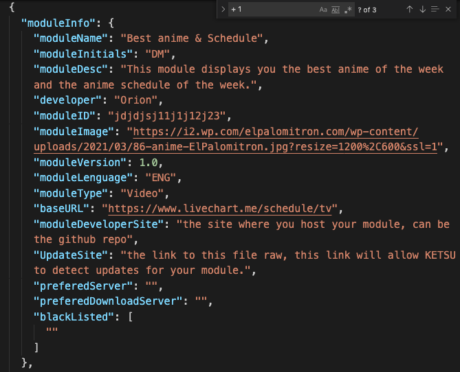Now we are going to start with the mainpage.
Main Page
Alright first thing i want to say is that you only have to configure 4 things on each part of the mainge / search etc. Those things are the request, the javascript and the 2 booleans on the javascript. So this are the only things you have to configure:
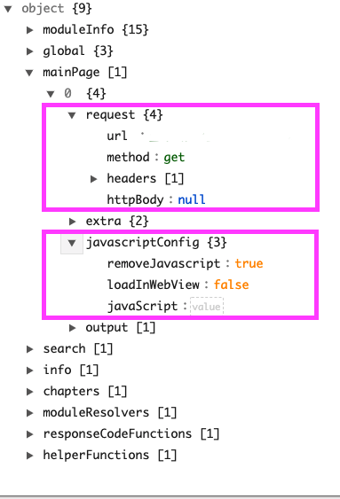I recommend you leaving the 2 booleans as they are on the template, on most of the cases you wont have to touch them. So focus on the request and the javascript. Below i will leave a table which defines every property of the json so you can read what they do over there.
Alright, now that the info is done we are going to prepare the enviorement to code the mainpage and be able to try everything in real time, checking bugs etc. So what we have to do is to set the request of the mainpage and load the module on KETSU.
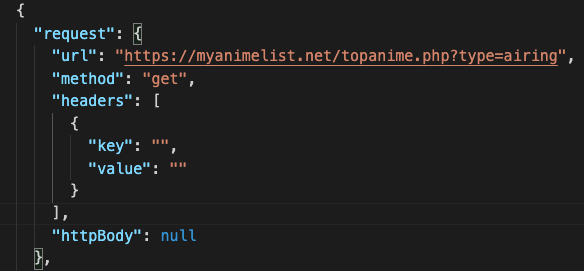As you can see i just setted the url to MyAnimeList and now im going to load the module on KETSU. To do that im going to send over the whole .json module to my phone, im going to copy it to my clipboard and i will click import it on the modules manager to load it on KETSU.
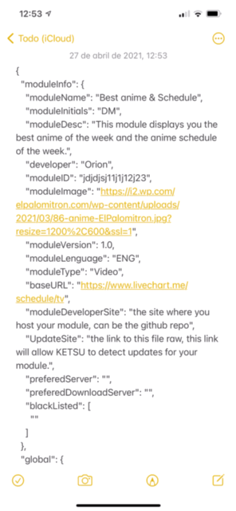Now we will click it on module we just loaded on the manager, then the manager will close itself and with this we will have triggered the mainpage code from the module.
The next step is to get the log of that mainpage Execution, to do that we will go to the *Moudule Logs* and we will click on the mainpage log *Executing Fixed Html* This will show up the log.
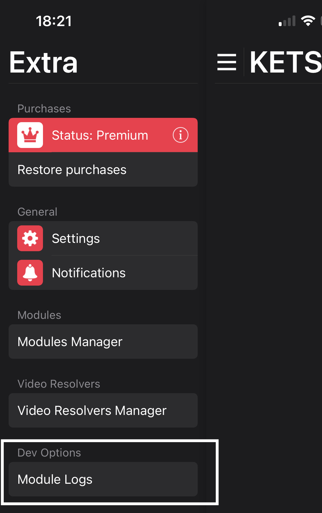 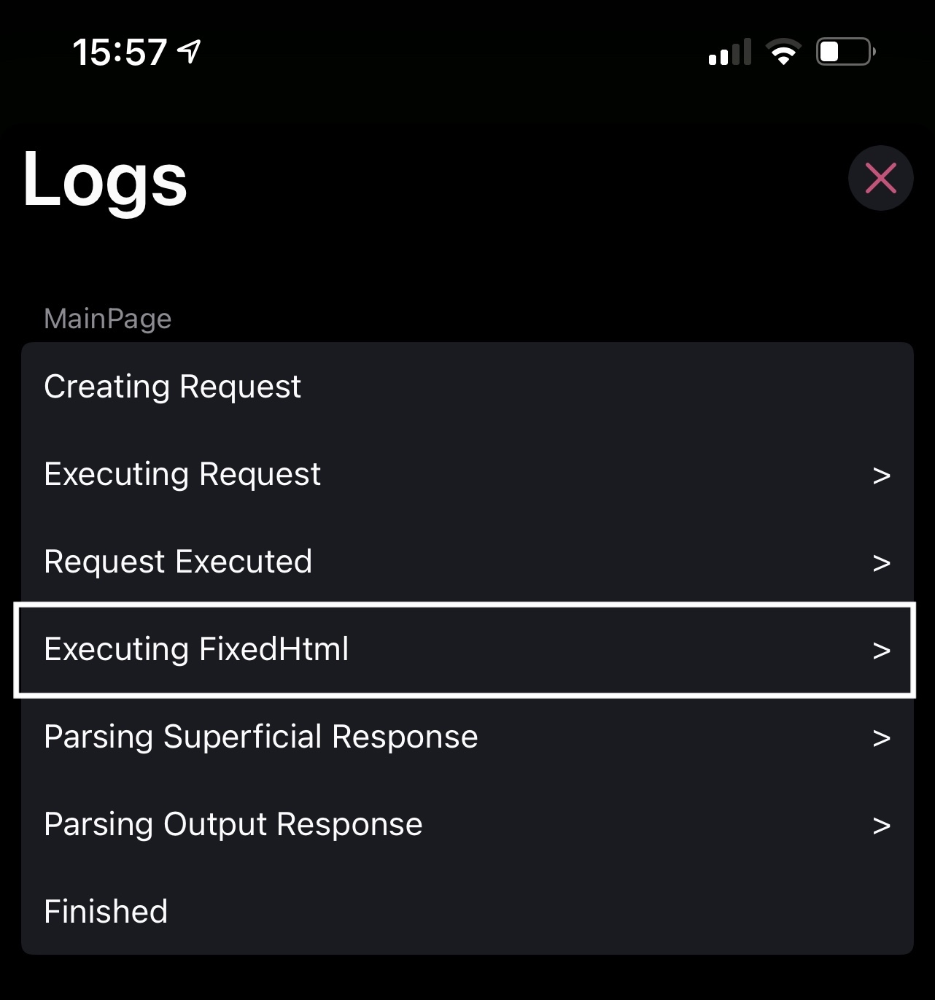This log contains the fixed html which you will use to work on the module. So you will have to copy the whole html clicking clipboard on the top right and pasting it on the mainpage.html of your module template, right above the template javascript of the mainpage.html file.
After doing this you will have something like this:
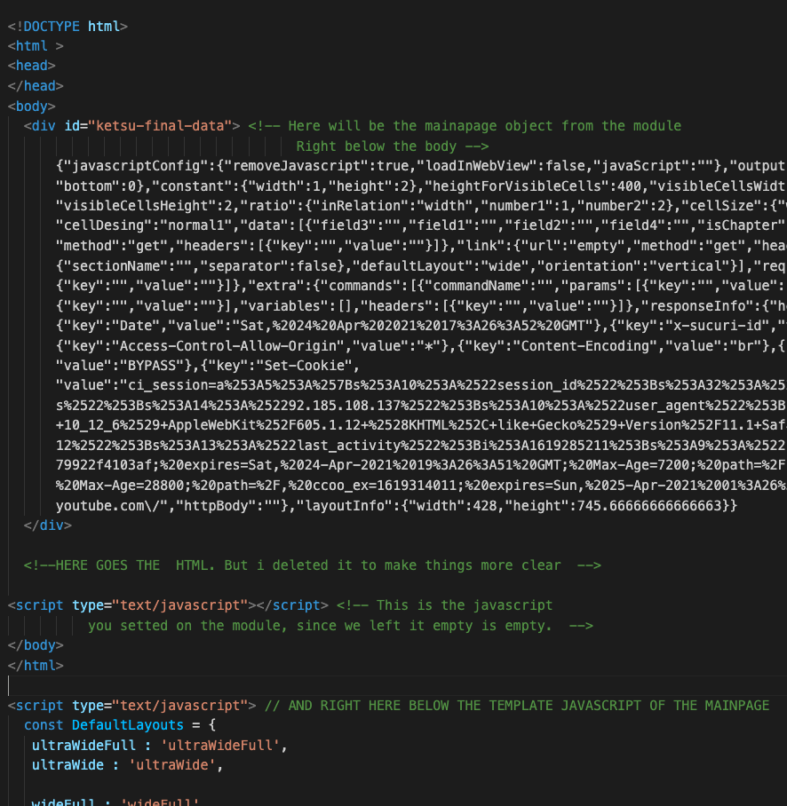The last thing you have to do to start coding is to replace that empty javascript tag at the bottom of the html with the template javscript the module provided that you left outside the html. Now you are completely setted up. Lets start coding.
Coding the Module
After start coding remember that you always have to use ' insetead of " on the strings, your script cant have any comments and remember to add ; after every line of code if you miss a single of this ; the module wont work on KETSU. All of this is because later you will have to compress the javascript and add it to the json.
As the instructions say at the bottom of the javascript you will have to fill the output array of output objects, what you want to do with the javascript is to recreate the mainpage object, this one:
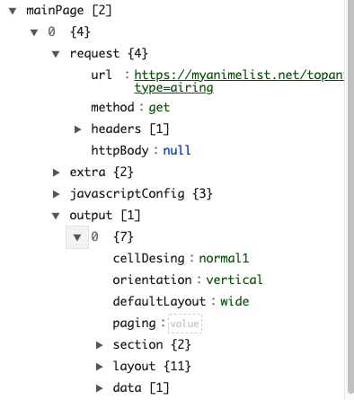But with the output filled with output objects with data.
The finished script will look like this:
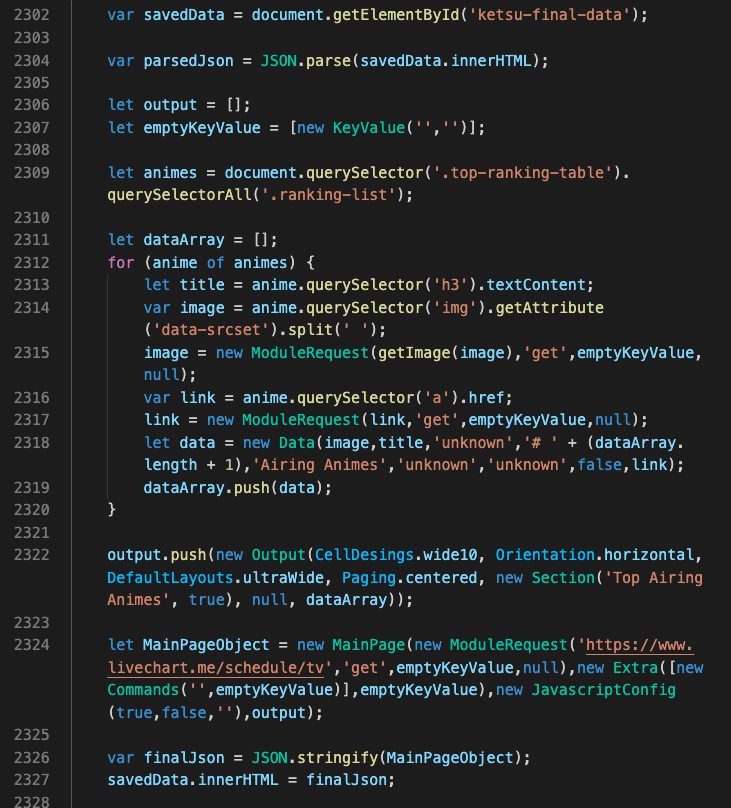As you can see i only added code from line 2309 to 2322, what im basically doing on line 2309 is getting all the data i need from the html and adding it as Data objects (line 2318-2319) to the dataArray.
Then on line 2322 im creating an output object which needs the cell desing, the orientation, the layout design the paging, the section title (uses a section object) & lastly the data that the output will have, this is the array of Data objects we just filled on line 2319.
With that output object created we append it to the output array and create the mainpage object on line 2324.
As i said before we will need to do two request, one to My anime list and the other one to live chart, as you can see the mainpage object we are creating has the livechart url on the request object, this will make KETSU do a second request to livechart.
If we print MainPageObject on the console it looks like this.
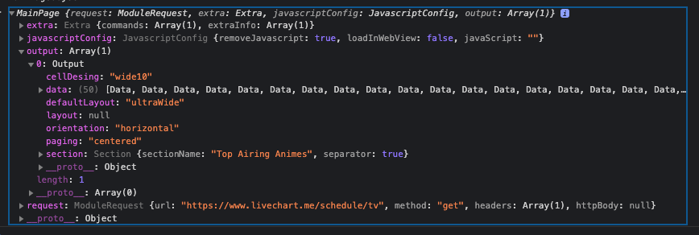As you can see is basically the same mainpage object as the module one but filled with data, now on lines 2326 - 2327 we transform it to a string and we set it at the top on the ketsu-final-data div that KETSU generated.
After copying the javascript to the module we will get something like this:
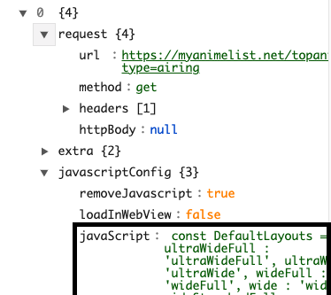The object and the javascript are longer but i shortened the image to make more clear. you just basically fill the javascript with the compresssed javscript you created.
Now you have to do what we previously did, send the module to your phone, copy it to your clipboard and import it on the modules manager again on KETSU. Then click on the module to load it.
If everything worked as intended you should be able to see the data on the mainpage. In this case mine looks like this.

As you can see the top animes of the week are displaying fine. Now we are going to repeat the same process as before, now that we have triggered the mainpage with the new module, if we check the logs we will see another request being done. This is because on the javascript we setted the url to livechart instead of leaving it empty. This means the app has done the request to livechart but since we didnt set the javascrip on the module to get the data of this second website, nothing else is displaying besides top animes of the week that we just coded.
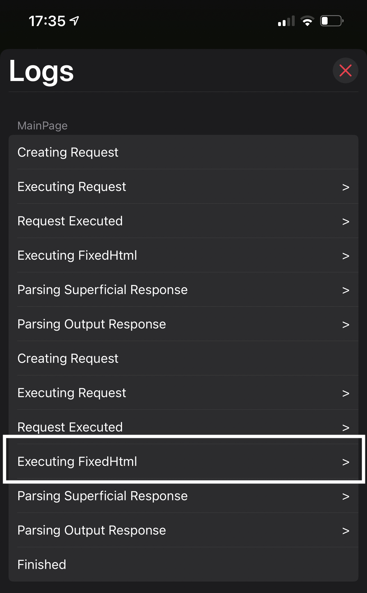Like before you will have to copy that second executing Fixedhtml log and do the same process as before, but now you only have one mainpage.html on the template folder and its been used already so what you will have to do is to add another mainpage.html (call it mainpage2.html) with the javascript template on it.
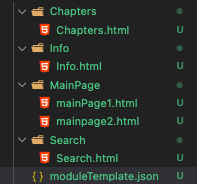On this mainpage2.html you will repeat the same process as before. Paste the html log you just copied, above the template javascript and on the bottom of the html you will see an empty script, replace this script with the template javascript.
Now that everything is setted up lets see how the script looks after i coded it.
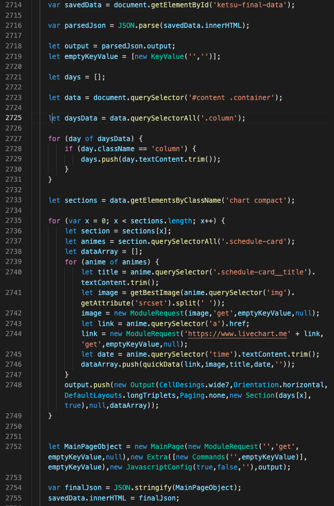As you can see the first thing that changes is on the line 2718, instead of creating an empty array for the output objects, we say parsedJson.output, this is because this is the second reqeust and on the parsedJson object its our previous mainpage object which has the top animes of the week, so if we want to still keep it we will have to add it on the new object mainpage object that we are going to create on this second request.
And the rest of the code is the same, we just get the data from the html to create the dataArrays which will fill the output objects on line 2748, after we got all the data we need. We create a mainpageobject on line 2752 but instead of adding another url to it, we leave the url empty. This will make KETSU stop making request and use this object as the data that will be displayed.
Our mainpage object will end up looking like this:
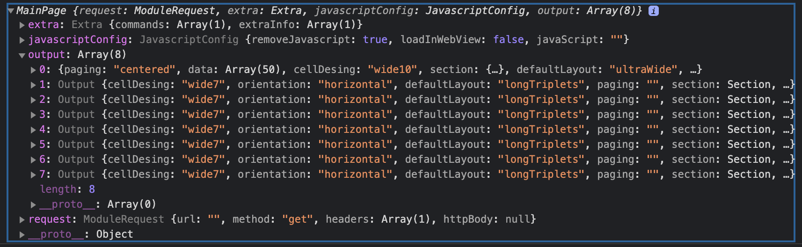As you can see we got 8 output objects filled with data, the first one is from the myanimelist request we made before and the other seven ones were taken from this second request ("livechart website") each of those sections represent one day of the week.
Now where do we set this second javascript? Simple, when we do second request things changes, as i mention before to make a request with the module system you gotta set the 4 variables of the module, the request, the javascript and the booleans above the javascript:
On second requests things changes, as you probably guessed now on this second request we dont have to hardcode the request, we already setted the request on the previous javascript. This is because on second request the 2 booleans of the javascript (removeJavascirpt & loadInWebView) and the request are setted on the javascript of the previous request as we did, but the javascript goes somewhere else.
What you have to do is to create a second mainpage object on the array of mainpages on your module, it will look like this:
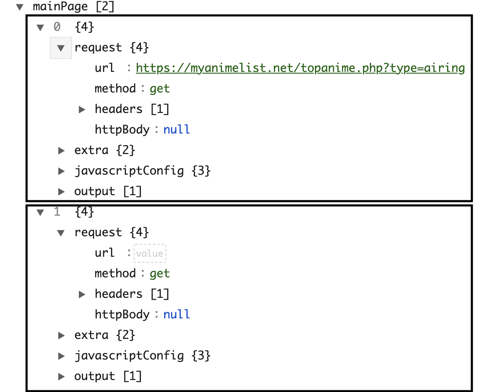On that second object you compress your javascript and you set it on the javascript vairable as you did before:
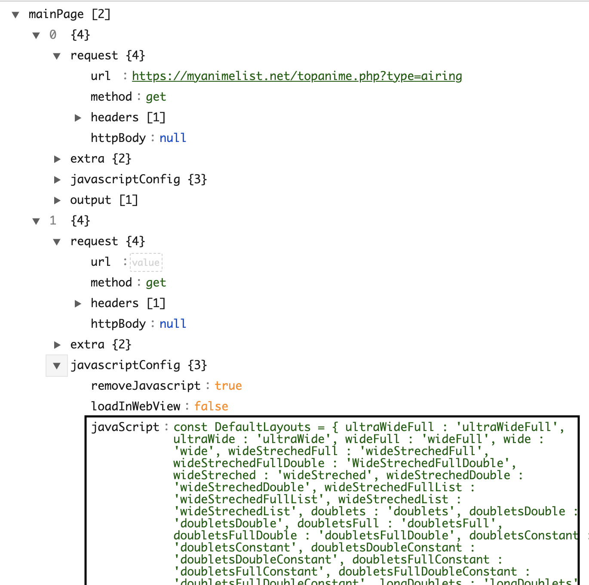As you can see, this second object doesnt have any urls, this is because as i mentioned before, the request and the 2 booleans of the javascript are setted on the mainapage object we generate on the first request.
And the javascript is setted manually on the javascript variable of this second request.
Once we have done all the steps, we can now send our module again to KETSU and load it. If everything worked as intended we should see the results on the mainpage, in this case mine looks like this.